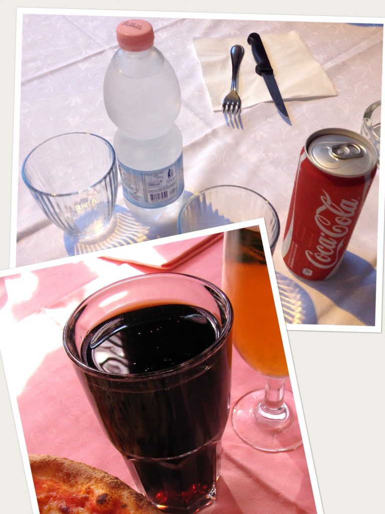

Chilled cokes (and water) with no ice
If you order a soda or water (acqua) don't expect the drink to be served with ice (ghiaccio), unless you are in highly touristic areas such as downtown Florence. Although drinks (bibite) are served cold (fredde), ice is not common at all, you'll need to specify it at the time of the order. Italians think that ice corrupts the original taste of the drink. So, if you order a coke, for example, you’ll get in one of the two versions above. {This is an excerpt from chapter 3 “Italian cuisine and food establishments” of the eBook “Italy from the Inside. A native Italian reveals the secrets of traveling in Italy”. Buy our eBook on Amazon and leave us a review! If it’s good, you’ll make us happy, if it’s bad, you’ll make us improve. Thank you either way!}